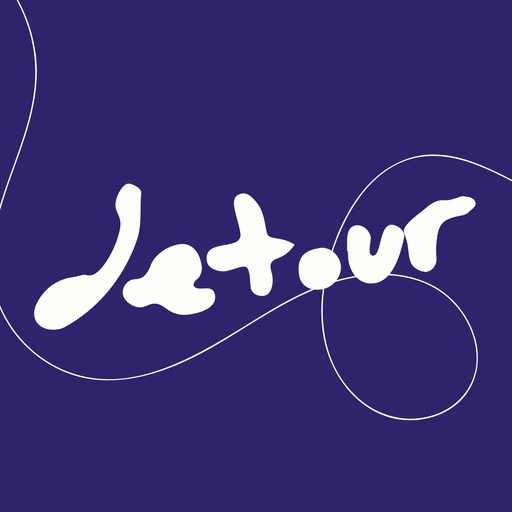

Hides itineraries that connect through the US or its territories.
Skip US layovers
Checking…
Works on Google Flights. Anything it can't read with confidence is left visible. No accounts, no tracking, no network calls —
privacy
.
☕ Buy me a coffee